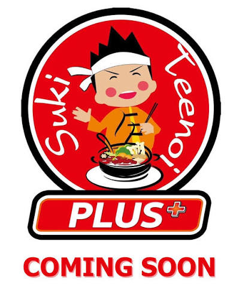
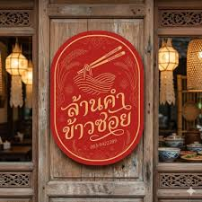
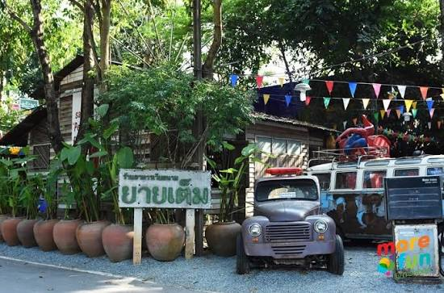
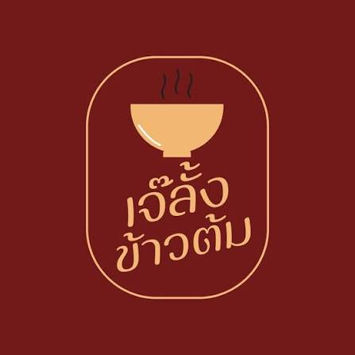

Suki Teenoi Plus+ PTTOR Sa Kaeo
สุกี้ / ชาบูร้านสุกี้และชาบู เหมาะสำหรับรับประทานอาหาร กับเพื่อนหรือครอบครัว
รวมร้านอาหารที่น่าสนใจในจังหวัดสระแก้ว

ร้านสุกี้และชาบู เหมาะสำหรับรับประทานอาหาร กับเพื่อนหรือครอบครัว

ร้านอาหารเหนือที่มีเมนูข้าวซอย และอาหารเหนือหลากหลายให้เลือก

ร้านอาหารเวียดนามที่มีเมนูหลากหลาย สำหรับผู้ที่ชื่นชอบอาหารเวียดนาม

ร้านข้าวต้มและอาหารตามสั่ง เหมาะสำหรับมื้ออาหารแบบง่าย ๆ
ร้านอาหารไทยและอาหารจานเดียว เหมาะสำหรับแวะรับประทานระหว่างเดินทาง